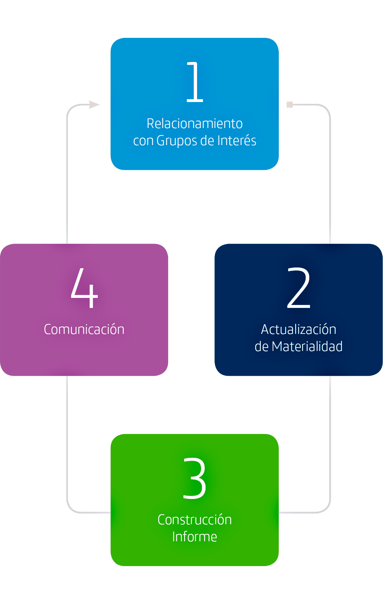
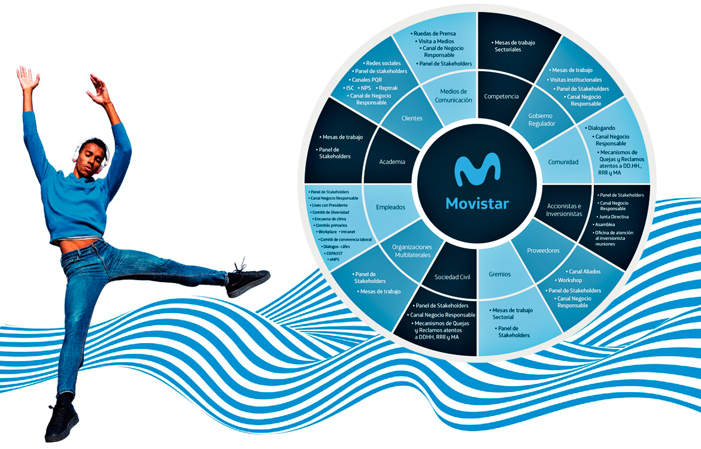

Informe Gestión Responsable 2020
Anualmente,
Colombia Telecomunicaciones S.A. ESP (en adelante “la Compañía”, “la Empresa” o “Telefónica Movistar Colombia”) elabora el Informe de Gestión Responsable para dar a conocer a sus grupos de interés la gestión financiera y no financiera del año inmediatamente anterior. Este Informe da cuenta de los resultados de la Compañía de enero a diciembre de 2020, y presenta su gestión Económica, Ambiental, Social y de Gobierno corporativo (ASG). Adicionalmente, algunos capítulos incluyen información de otras sociedades que forman parte del Grupo Telefónica y que operan en Colombia, como es el caso de Wayra y la Fundación Telefónica Colombia, en adelante Fundación Telefónica Movistar. Sin embargo, en estos casos se incluirá una nota aclaratoria para especificar a qué corresponde cada referencia
Proceso para la elaboración del informe
Relacionamiento con grupos de interés
Para la Compañía, relacionarse con sus grupos de interés es esencial para conocer el nivel de relevancia que se le atribuye a los diferentes asuntos económicos, sociales, ambientales y de gobernanza, y así entender las expectativas en un contexto cambiante, buscando maximizar el impacto organizacional y establecer relaciones de confianza. Este relacionamiento se basa en la norma AA1000 Accountability Principles (AA1000AP).
El Panel de Negocio Responsable, creado en 2016, busca la representación de los principales grupos de interés de la Empresa, tanto a nivel local (Colombia) como global, y se divide a su vez en dos ámbitos: Central y Extendido. En el primero participan expertos en sostenibilidad, quienes aportan una visión global, mientras en el segundo se invitó a participar -desde Colombiaa 13.426 personas de los grupos de interés (clientes, accionistas, inversionistas, proveedores, empleados, gobierno, comunidad, sociedad civil, organizaciones multilaterales, gremios, academia y medios de comunicación), de las cuales efectivamente participaron 371 personas. A raíz de este diálogo se identificaron 18 asuntos materiales, y dentro de ellos el uso responsable de la tecnología, la seguridad digital y el comportamiento ético son los aspectos elegidos como más relevantes en las decisiones de los diferentes grupos de interés, y donde además perciben un mejor desempeño de la Compañía.

El Panel de Negocio Responsable, creado en 2016, busca la representación de los principales grupos de interés de la Empresa, tanto a nivel local (Colombia) como global, y se divide a su vez en dos ámbitos: Central y Extendido. En el primero participan expertos en sostenibilidad, quienes aportan una visión global, mientras en el segundo se invitó a participar -desde Colombiaa 13.426 personas de los grupos de interés (clientes, accionistas, inversionistas, proveedores, empleados, gobierno, comunidad, sociedad civil, organizaciones multilaterales, gremios, academia y medios de comunicación), de las cuales efectivamente participaron 371 personas. A raíz de este diálogo se identificaron 18 asuntos materiales, y dentro de ellos el uso responsable de la tecnología, la seguridad digital y el comportamiento ético son los aspectos elegidos como más relevantes en las decisiones de los diferentes grupos de interés, y donde además perciben un mejor desempeño de la Compañía.
Plan de Negocio Rentable 2016
Asuntos materiales identificados en panel de Stakeholders

Adicional al Panel de Stakeholders,
y con el propósito de mantener
un diálogo continuo, la Compañía
mantiene relación con los grupos de
interés a través de otras herramientas
y canales para conocer su percepción.
Internamente, en 2020 se realizaron
15 conversatorios (cada uno con 17
participantes), y 26 transmisiones
virtuales (o “lives” con 900 asistentes
en promedio) con la participación
del Presidente CEO, además de 38
conversatorios con Directores 1
y 39 puntos de encuentro en las
diferentes áreas. En estos espacios de
relacionamiento con colaboradores(as)
se habló principalmente de: el liderazgo
en tiempos remotos, la digitalización
como factor fundamental para la
reactivación económica, la visión
estratégica, los espacios de construcción
de equipo, el empoderamiento y
la motivación. Adicionalmente, se
realizaron otros 26 lives de bienestar
(#ConectadosConTuBienestar
Hispam, #JuevesDeMovistarMúsica
y #QuedateEnCasa Con Chris
Carpentier) con más de 4.300
reacciones, cerca de 3.000 comentarios
y más de 66.300 vistas.
Entre tanto, se realizó un diálogo con los
accionistas en el cual, entre otros temas,
se habló sobre emisión de bonos y
asuntos financieros, los avances del Plan
de Negocio Responsable, y las acciones
adelantadas por la Compañía frente
a sus colaboradores en el marco de la
emergencia sanitaria. Con inversionistas,
se realizaron 28 reuniones para
resolver sus inquietudes financieras y
operativas relacionadas principalmente
con la emisión del bono, así como
la gestión de la Compañía en temas
asociados a la COVID-19, espectro,
gobierno corporativo y competencia.
Así mismo, con proveedores se realizó
el Workshop y la encuesta Generación
de valor desde la Sostenibilidad.
Adicionalmente, en 2020 se realizaron
17 ruedas de prensas en su mayoría
virtuales, con la participación de 198
asistentes, destacando el lanzamiento
de Movistar Empresas, la instalación y el
respectivo anuncio del primer piloto de
5G en Colombia, y las novedades sobre
el despliegue de Fibra Óptica de Movistar
en las diferentes regiones del país.
Grupos de interés y herramientas/
canales de relacionamiento
(GR1 102-40)

Actualización Materialidad
(GR 102 - 40)
Considerando los asuntos identificados en el Panel de Stakeholders y en los diferentes espacios de relacionamiento con grupos de interés mencionados previamente, así como el Plan Estratégico de Compañía, el Plan de Negocio Responsable de Movistar Colombia 2019-2021 y el contexto colombiano, se detallan los siguientes asuntos materiales:
| Relevancia | ||||||
|---|---|---|---|---|---|---|
| GRI | Asuntos Materiales | Cobertura | Cadena de Suministros |
Procesos internos |
Clientes | |
| Económica | Gestión económica | I | A | A | M | |
| 201 | Desempeño economico | I | A | A | M | |
| Social | 1. Confiables y accesibles | IE | A | A | A | |
| 418 | Privacidad del cliente | IE | A | A | A | |
| 2. Crecimiento digital e innovación | IE | A | A | A | ||
| 203 | Impactos económicos indirectos | E | A | A | A | |
| Innovación | A | A | A | A | ||
| 3. Cadena de suministro sostenible | E | A | A | B | ||
| 204 | Practicas de adquisicion | E | A | M | B | |
| 4. Empresa magnética mejor talento | I | B | A | B | ||
| 401 | Empleo | I | A | A | B | |
| 403 | Salud y seguridad | IE | A | A | A | |
| 405 | Diversidad e igualdad de oportunidades | IE | A | A | M | |
| Ambiental | 5. Gestión Ambiental | IE | A | A | M | |
| 302 | Energía | IE | A | A | B | |
| 305 | Emisiones | IE | A | A | B | |
| 306 | Efluentes y residuos | IE | A | A | A | |
| Gobernanza | 6.Etica y buen gobierno | IE | A | A | A | |
| 205 | Anticorrupcion | IE | A | A | A | |
| 206 | Competencia | IE | B | A | M | |
| 412 | Evaluacion de Derechos Humanos | IE | A | A | A | |
| 419 | Cumplimiento socioeconómico | IE | A | A | M |
| Relevancia | Cobertura | ||
|---|---|---|---|
| A | Alto | I | Interno |
| M | Medio | E | Externo |
| B | Bajo | ||
| NA | No aplica | ||
Construcción del Informe
(GRI 102 - 46 y 102 -54)
Una vez identificados los asuntos materiales, se procedió a consolidar la información e indicadores relevantes para documentarlos en el Informe, el cual busca dar cumplimiento a los artículos 46, 47 (modificado por el artículo 1° de la Ley 603 de 2000) y 446 de la Ley 222 de 1995 (Código de Comercio Colombiano), y el artículo 87 de la Ley 1876 de 2013. Así mismo, este Informe se ha elaborado de conformidad con los Estándares GRI (Global Reporting Initiative): opción Esencial, y acoge las recomendaciones dadas en la Guía para la Elaboración de Informes ASG para Emisores en Colombia.
El que la Compañía ya reporte con estándares GRI, facilitará la preparación de información para dar cumplimiento a los requerimientos que exige el ser una Sociedad de Beneficio e Interés Colectivo (BIC), para la cual, en el año 2020 se recibió la autorización por parte de la Asamblea General de Accionistas, y que ha sido aprobada en el mes de febrero del año 2021 por la Asamblea de Tenedores de Bonos.
Así mismo, es importante señalar que el Informe presenta tanto la información financiera como la no financiera (ASG) de la Compañía, y adicionalmente detalla contenido de Wayra y un capítulo de Fundación Telefónica Movistar Colombia, entidad a través de la cual se despliega la acción social y cuyos resultados no se incluyen en los estados financieros.
Dando cumplimiento a los Estándares GRI, a continuación se presenta cómo la Compañía busca cumplir los Principios para la elaboración del Informe:
Imagen para acompañar texto
Precision: incluye contenidos cualitativos y cuantitativos específicos de la gestión financiera y no financiera. Se da la opción al lector de profundizar en contenidos accediendo a los enlaces/códigos QR que proporcionan mayor detalle.
Equilibrio: este Informe intenta reflejar también las oportunidades de mejora y aprendizajes en el proceso de ser una empresa responsable con sus impactos directos e indirectos.
Claridad: se diagrama de tal manera que los grupos de interés puedan encontrar la información fácilmente. En cada uno de los contenidos y/o capítulos se detallan los Objetivos de Desarrollo Sostenible (ODS) al que se aporta con el asunto respectivo, el contenido GRI, de acuerdo con la numeración de los Estándares GRI y se indica si el contenido es Ambiental, Social o de Gobernanza, para facilitar la comprensión de la gestión ASG.
Compariblidad: : se presenta la evolución del desempeño de la Compañía en los indicadores clave.
Fiabilidad: este Informe es aprobado por los órganos de gobierno de la Compañía, e incluye cifras reportadas
Puntualidad: se presenta anualmente una vez es aprobado por Asamblea General de Accionistas en primera Asamblea del año.
Inclusión de los grupos de interés: en este capítulo se identifican los grupos de interés con las respectivas herramientas/ canales de relacionamiento.
Contexto de sostenibilidad: : el Informe presenta en el cuarto capítulo el contexto de sostenibilidad y la gestión de la Compañía en el Plan de Negocio Responsable.
Materialidad: como se expuso previamente, la Compañía ha identificado los asuntos materiales los cuales se detallan en los capítulos del Informe.
Exhaustividad: se indica los aspectos materiales y su cobertura, de modo que se reflejen sus efectos significativos económicos, ambientales, sociales y de gobernanza. De esta manera, los grupos de interés pueden analizar el desempeño de la Compañía en el periodo analizado.
Comunicación
El Informe se presenta con motivo de la convocatoria a la reunión ordinaria de la Asamblea de Accionistas de Colombia Telecomunicaciones S.A. ESP, y también tiene como objetivo rendir cuentas sobre los diversos compromisos voluntarios en materia de sostenibilidad, como lo son: la Agenda 2030 de la Organización de las Naciones Unidas, los 10 Principios del Pacto Mundial, Business for Peace, el Acuerdo para la Sostenibilidad de la Asociación Nacional de Empresas de Servicios Públicos y Comunicaciones (ANDESCO), los Principios de Empoderamiento de la Mujer, Guías Colombia y Pride Connection. El Informe será publicado en la página web corporativa (www.telefonica.co) y se divulgará en los canales y escenarios que la Compañía priorice.